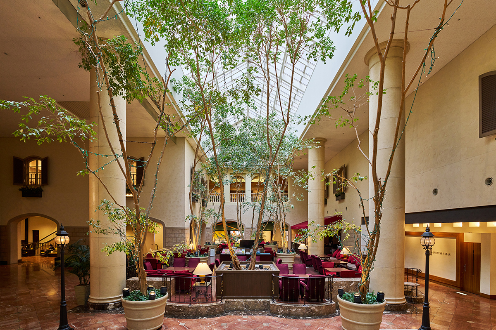
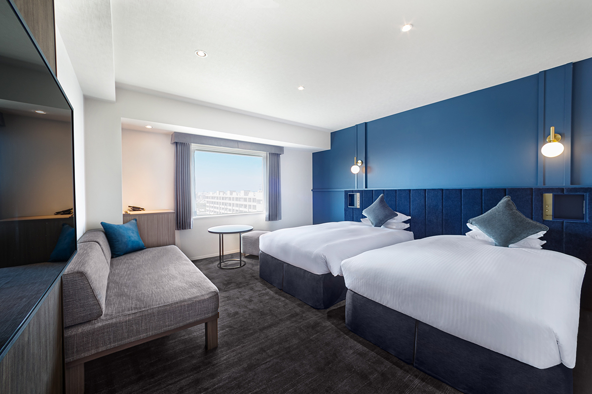
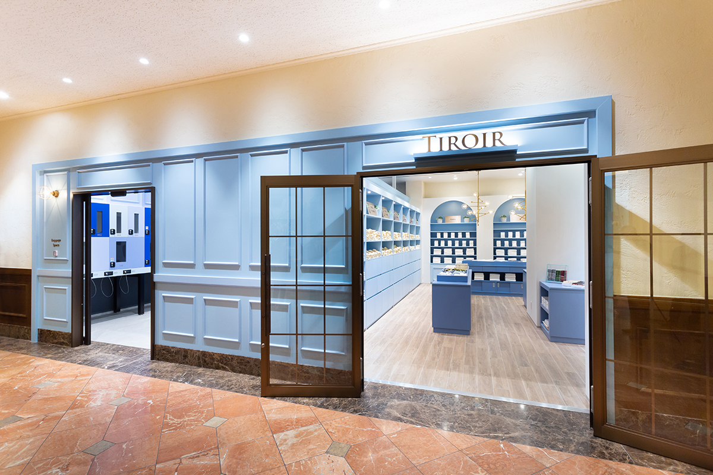
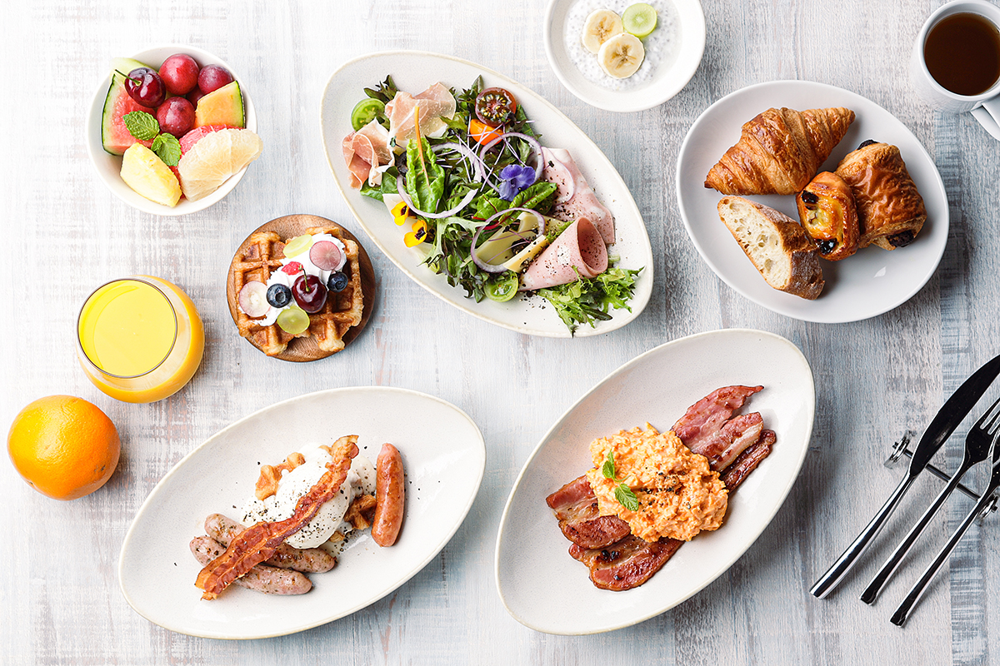

Префектура Тиба · Ураясу · где остановиться
Oriental Hotel Tokyo Bay: средиземноморский курорт в 17 минутах от станции Токио

Oriental Hotel Tokyo Bay стоит прямо у станции Синъураясу, в 17 минутах на поезде от станции Токио. В августе 2023 года отель переделал два верхних этажа и превратил их в маленький курорт в средиземноморском духе.
Номера
Синий цвет и босые ноги
Ураясу лежит на берегу Токийского залива, у самой границы с Токио. До отеля легко добраться не только из центра столицы: от аэропортов Ханэда и Нарита сюда идут прямые автобусы, а здание соединено со станцией JR Синъураясу. Здесь останавливаются после тематических парков или выставочного центра «Макухари Мессе», сюда приезжают и те, кто приехал в Токио в командировку.
1 августа 2023 года отель открыл заново 11-й и 12-й этажи, самые верхние. Обновлённых номеров 99, они пяти типов, и каждый рассчитан на самых разных гостей, от путешественника в одиночку до семьи с детьми.

Из номеров убрали лишнюю мебель, и в них стало заметно просторнее. Главный цвет отделки синий: он напоминает о курортах Средиземного моря и сразу настраивает на отпуск. У входа в каждый номер есть прихожая, поэтому обувь можно оставить у двери и ходить босиком, как дома, с удовольствием вытянув ноги. В части номеров устроен тропический душ, который хорошо снимает усталость.
Лаунж и TIROIR
Всё, что нужно, на выбор
Первое, что видит гость, это светлый лаунж под стеклянной крышей, где между колоннами растут деревья. Рядом работает TIROIR, комната с косметикой и принадлежностями для гостей. Название по-французски значит «выдвижной ящик»: здесь хранится множество принадлежностей, и каждый берёт то, что подходит именно ему, например масло для волос.

Буфет
Рис и яйца Тибы на завтрак
В буфете отеля собраны продукты префектуры Тиба. Среди них рис «Тако», мягкий и сладковатый: когда-то его выбирали для подношения императору. Есть и фирменные яйца «Аканэ бидзин» с ярким желтком и насыщенным вкусом. Из них так и хочется сделать японский завтрак «тамаго какэ гохан», горячий рис с сырым яйцом. Вечером буфет предлагает европейскую и китайскую кухню, утром японскую и европейскую.

В отеле 511 номеров, а кроме лаунжа и TIROIR здесь есть британский паб. Ночь с завтраком в 2023 году стоила от 15 200 иен с налогом и сервисным сбором.
Oriental Hotel Tokyo Bay
- Адрес
- префектура Тиба, Ураясу, Михама, 1-8-2
- Телефон
- +81 47-350-8111
- Номера
- 511
- Заезд / выезд
- 15:00 / 12:00
- Цены / Вход
- ночь с завтраком от 15 200 иен (налог и сервисный сбор включены)
- Как добраться
- прямой выход со станции JR Синъураясу; на машине около 4 минут от съезда Ураясу скоростной дороги Сютоко